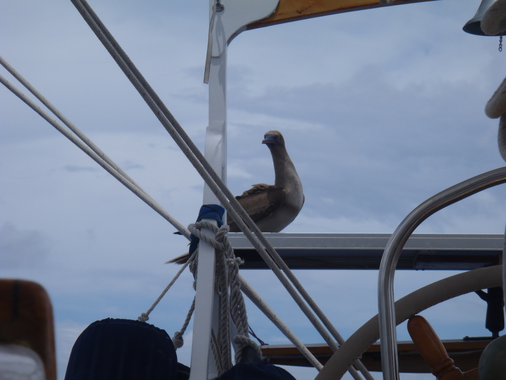
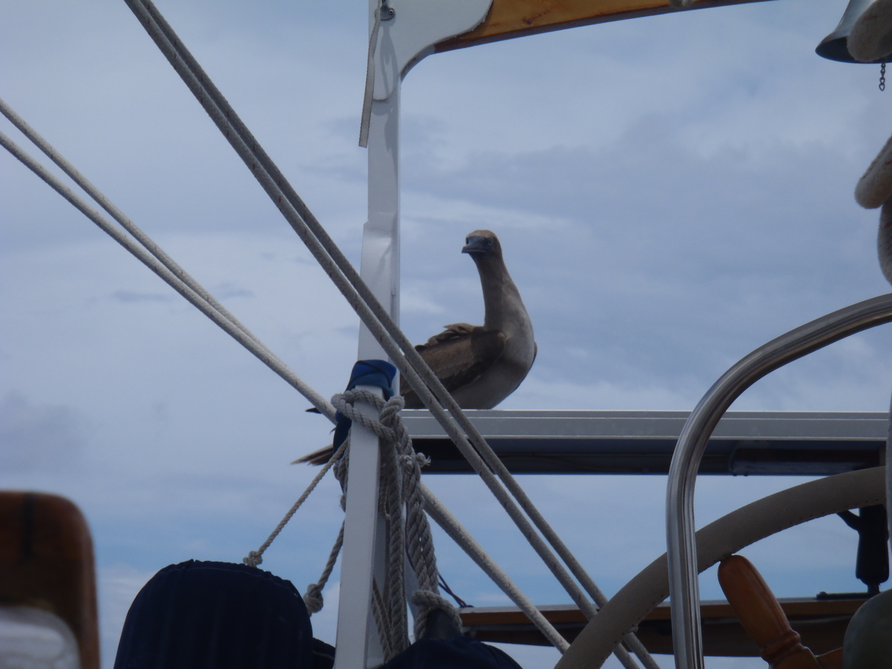

Thursday, November 25th, 2010

 
We replaced the yankee with the genoa (and also replaced the jib sheets - new ones were waiting, the previous ones were a
bit too short for the genoa).

We replaced the yankee with the genoa (and also replaced the jib sheets - new ones were waiting, the previous ones were a
bit too short for the genoa).
With the spinnaker pole, it's pretty stable to go downwind.
Some gannet had been circling the boat, for quite some time during the past few days..., it decided to land on the solar panel to check out what kind of beast we actually were.
And of course, we had to clean-up after he was gone..., those guys poop as soon as they land somewhere.
The weather forecast is anticipating some thunderstorms for tonight...